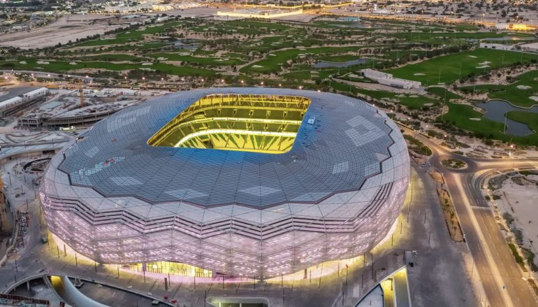
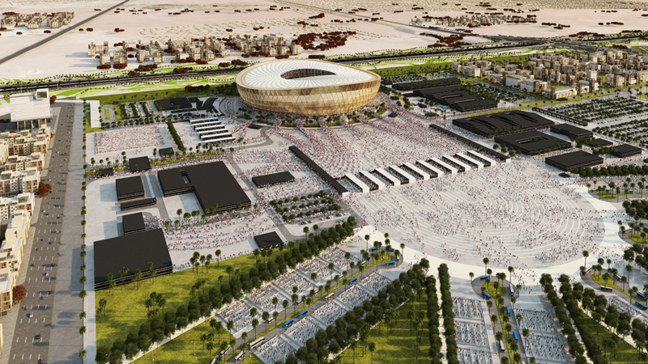
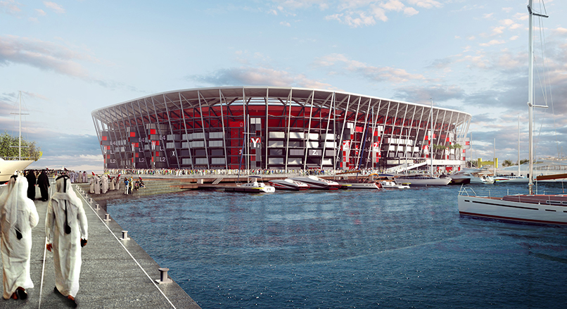

Education City, Al Rayyan
O Education City Stadium está localizado no coração da Cidade da Educação em Al Rayyan, vizinha a Doha. Um vibrante centro de pesquisa e conhecimento, onde ficam as sedes de algumas das mais importantes universidades do mundo e lar da Qatar Foundation for Education, Science and Community Development.
Localizado a apenas 7 km do centro antigo de Doha, o estádio foi inaugurado em junho de 2020 conta com 40 mil lugares. Após a Copa do Qatar, o país planeja doar 20 mil lugares para estádios em países em desenvolvimento.
Localização: 8C6F+8Q7, Ar Rayyan, Catar
Capacidade: 40.000 pessoas
Ano de Inauguração: 2020
| Data/Hora | Times | Grupo |
|---|---|---|
| 24/11/2022 10H | Uruguai x Coreia do Sul | H |
| 26/11/2022 10H | Polônia x Arábia Saudita | C |
| 27/11/2022 10H | Dinamarca x Tunísia | D |
| 28/11/2022 10H | Coreia do Sul x Gana | H |
| 30/11/2022 12H | Tunísia x França | D |
| 02/12/2022 12H | Coreia do Sul x Portugal | H |
Khalifa

Principal estádio de futebol do Catar desde 1976, o Estádio Khalifa International tem servido como a pedra angular da tradição esportiva do país. Representando a continuidade e o abraço dos torcedores, dois novos arcos duplos foram recentemente adicionados ao estádio em preparação para as próximas partidas da Copa do Mundo da FIFA™.
O estádio oferece aos torcedores 40.000 lugares e está convenientemente localizado a 10 km do centro da cidade. Faz parte de um desenvolvimento maior que inclui o centro aquático olímpico do Catar e um salão coberto. O Villaggio Mall, um parque e o hotel The Torch Doha também fazem parte do empreendimento.
O estádio também receberá o Museu 3-2-1 Catar Olímpico e Esportivo.
Localização: 7C7X+C67, Al Waab St, Doha, Catar
Capacidade: 40.000 pessoas
Ano de Inauguração: 1976
| Data/Hora | Times | Grupo |
|---|---|---|
| 21/11/2022 10H | Inglaterra x Irã | B |
| 23/11/2022 10H | Alemanha x Japão | E |
| 25/11/2022 13H | Holanda x Equador | A |
| 27/11/2022 13H | Croácia x Canadá | F |
| 29/11/2022 12H | Equador x Senegal | A |
| 01/12/2022 16H | Japão x Espanha | E |
Lusail
Lusail é símbolo do que o governo do Qatar quer mostrar para o mundo ao sediar a Copa de 2022. Em meio à visão internacional de que faltam liberdades individuais, uma demonstração de bem-estar do povo que passará a viver lá. Para contrariar a visão de que se trata de um país preso ao passado por causa de sua riqueza gerada pela exploração de petróleo, um futuro tecnológico e sustentável. As obras da cidade começaram há mais de 15 anos, quando ainda não se tinha confirmação sobre sediar o Mundial. Mas só a partir do momento em que a Fifa oficializou a indicação é que os planos ficaram mais concretos. A área de 38 km² tem algumas partes já prontas e outras cheias de entulhos, obras e prédios em construção em meio ao processo de inverter a desertificação da região para torná-la habitável. Hoje, é um cenário distópico, que mistura areia a grandes empreendimentos.
A ideia é entregar tudo no começo de 2022 e assim desafogar a capital Doha, que tem população próxima de 2,4 milhões de pessoas — o Qatar inteiro tem 2,7 milhões, a título de comparação. Para Lusail, a expectativa é de 200 mil residentes, mas aproximadamente 450 mil somando trabalhadores e visitantes.
É uma cidade inteira que avança do zero junto com seu maior cartão-postal, o estádio que começou a ser erguido em 2017. Mas nem tudo é bonito como na ofensiva de relações públicas que o país tem feito nos últimos anos.
Localização: CFCR+75, Lucille, Catar
Capacidade: 80.000 pessoas
Ano de Inauguração: 2021
| Data/Hora | Times | Grupo |
|---|---|---|
| 22/11/2022 13H | Argentina x Arábia Saudita | C |
| 24/11/2022 22H | Brasil x Sérvia | G |
| 26/11/2022 22H | Argentina x México | C |
| 28/11/2022 22H | Portugal x Uruguai | H |
| 30/11/2022 22H | México x Arábia Saudita | C |
| 02/12/2022 22H | Brasil x Camarões | G |
974, Ras Abu Aboud
O local foi inicialmente conhecido como Estádio Ras Abu Aboud, depois foi renomeado para 974. O motivo da mudança de nome é porque o prédio é removível e foi construído com materiais reciclados e 974 contêineres. Além disso, o número representa o prefixo de discagem telefônica no Qatar.
O Estádio 974, um estádio temporário construído ao longo das margens do Golfo, oferece não apenas vistas deslumbrantes de West Bay, mas um conceito de design intrigante. Construído a partir de contêineres, o estádio usa menos material de construção do que os estádios tradicionais, criando um plano a ser seguido por futuros desenvolvedores.
Para a Copa do Mundo do Qatar de 2022, Ras Abu Aboud sediará seis jogos na fase de grupos e mais um nas oitavas de final.
Para a Copa Árabe, o Estádio 974 foi utilizado pela primeira vez em 30 de novembro de 2021, durante a partida entre Emirados Árabes Unidos e Síria. Em seguida, sediou mais seis partidas do torneio, incluindo uma semifinal e o duelo pelo terceiro lugar.
Localização: 7HQ8+JG2, Doha, Catar
Capacidade: 40.000 pessoas
Ano de Inauguração: 2021
| Data/Hora | Times | Grupo |
|---|---|---|
| 22/11/2022 19H | México x Polônia | C |
| 24/11/2022 19H | Portugal x Gana | H |
| 26/11/2022 19H | França x Dinamarca | D |
| 28/11/2022 19H | Brasil x Suíça | G |
| 30/11/2022 22H | Polônia x Argentina | C |
| 02/12/2022 22H | Sérvia x Suíça | G |